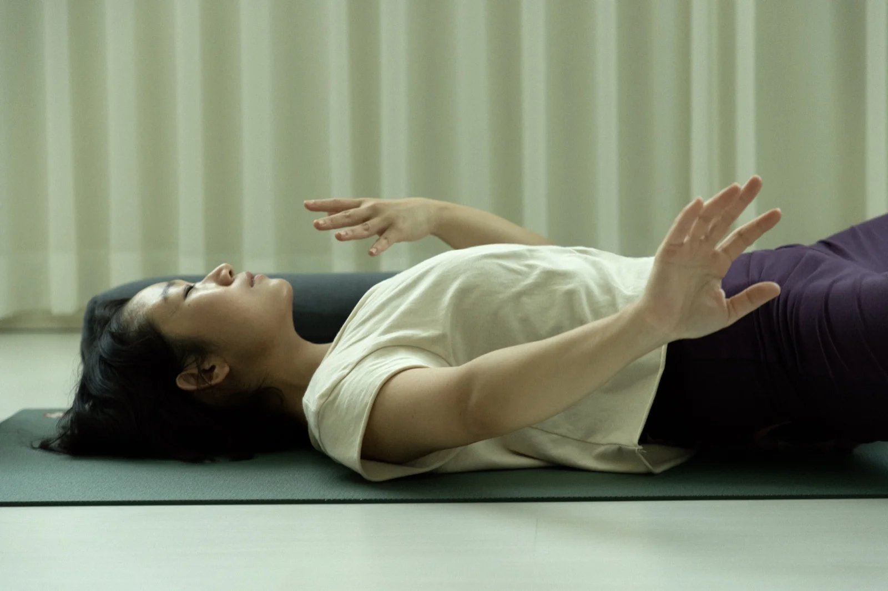
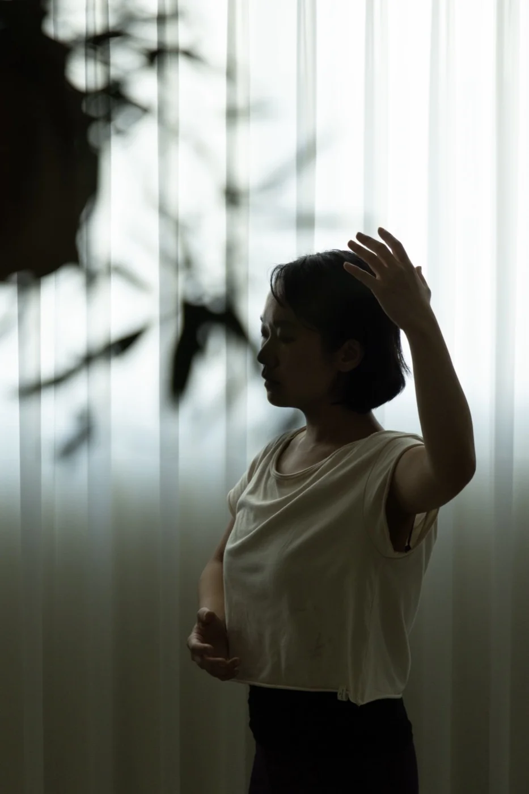
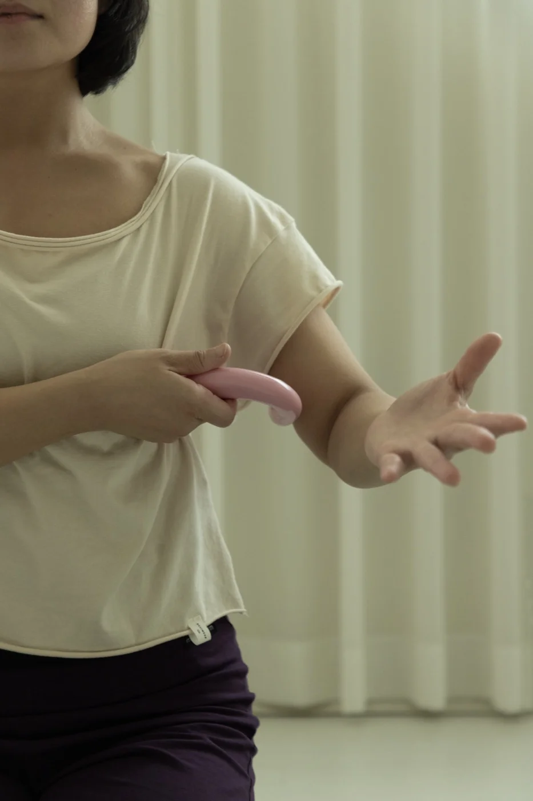
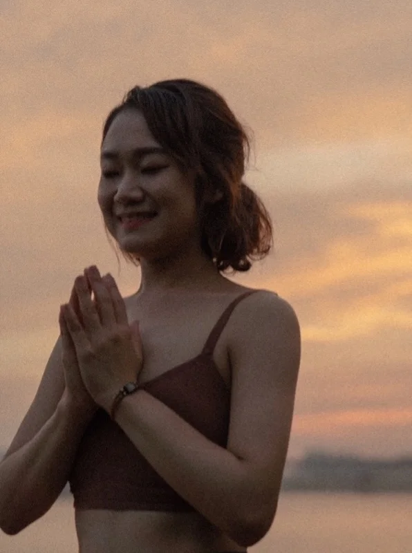

명상과 이완에서 시작하는 한 시간
도구로 근막을 먼저 풀어냅니다.
몸이 굳어 있어도 괜찮습니다.
몸과 마음의 흐름 살피기
몸의 중심을 따라 흐르는 감각을 따라가며, 지금 내 상태가 어떤지 알아차립니다.

호흡과 움직임 경험하기
호흡을 따라 움직이며, 몸의 상태를 스스로 조절하는 법을 익힙니다.

수요일에 지금 내 몸이 어떤 상태인지 살피고,
금요일에 호흡으로 그 상태를 변화시킵니다.
두 수업은 서로 다른 알아차림을
담당하고 있습니다.
| 일 | 월 | 화 | 수 | 목 | 금 | 토 |
|---|---|---|---|---|---|---|
| 1 | 2 | 3 | 4 | 5 | ||
| 6 | 7 | 8 | 9 | 10 | 11 | 12 |
| 13 | 14 | 15 | 16 | 17 | 18 | 19 |
| 20 | 21 | 22 | 23 | 24 | 25 | 26 |
| 27 | 28 | 29 | 30 |
9/25 (금) 추석 연휴 휴강
모두 12:00–13:00 · 총 8회 · 정원 최대 10명
9월 전체 패스는 9/2부터 9/30까지 개설되는 8회 전 회차를 포함합니다.

목소리와 요가를 나눕니다.
호흡과 진동을 통해 당신의 일주일에
편안함을 선물하겠습니다.
정원 최대 10명 · 선착순 마감
신청서 작성하기 인스타그램 DM으로 문의
신청서를 남겨주시면 확인 후 결제 안내를 드립니다.
스튜디오쿨라 프로필 상단 링크에서도 등록하실 수 있습니다.